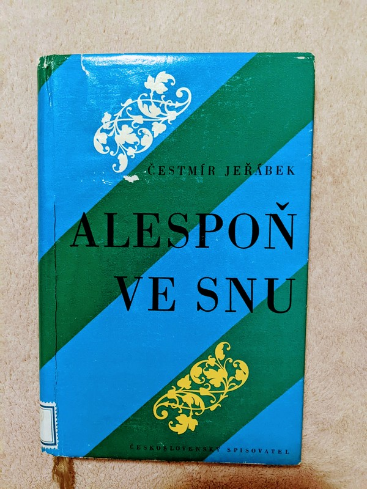
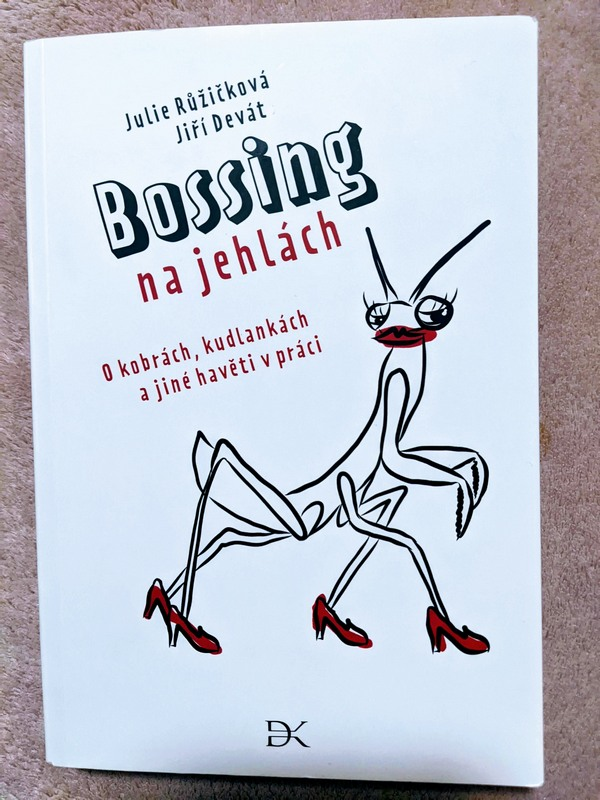
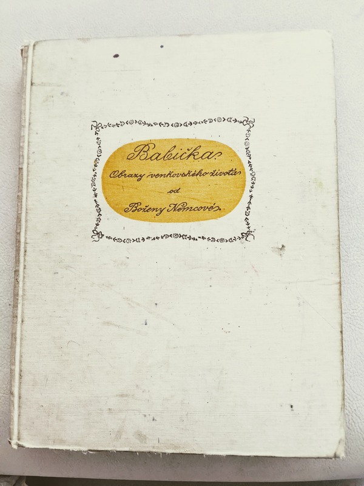
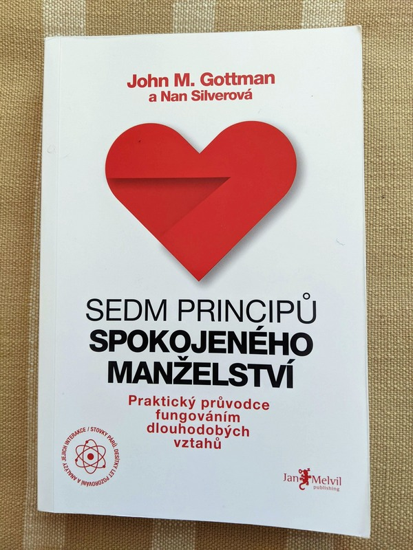
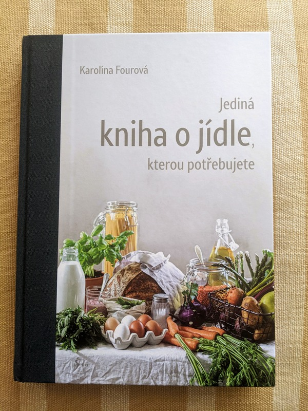
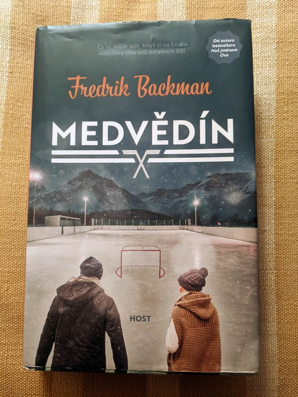

Vítám vás u slavnostního dvoustého příspěvku této literární rubriky! To by skoro chtělo bouchnout šampáňo :-) A že to dneska bude pěkně nadupaný!
Čestmír Jeřábek - Alespoň ve snu
Tato knížka, zcela náhodně objevená v kroměřížské knihovničce, pro mne byla velice příjemným překvapením a zhltla jsem ji téměř na posezení. Jedná se o literární zpracování posledních let života spisovatelky Boženy Němcové, konkrétně jejího ne příliš šťastného období, z něhož se zrodilo její nesmrtelné dílo - Babička. Pokud jste sledovali televizní sérii Božena, kterou před nějakou dobou uváděla Česká televize, rozhodně vám to pomůže se mnohem lépe zorientovat ve všech postavách. Bez její znalosti by mi možná chvilkami ucházel kontext, ale že jsem seriál měla ještě v poměrně čerstvé paměti, byla jsem v obraze kdo je kdo a jaký má k Boženě vztah. Rozsahem nevelké dílko je fajn literární jednohubkou, kterou můžu jen doporučit každému, kdo si chce o životě naší slavné spisovatelky trochu rozšířit obzory.

Julie Růžičková, Jiří Devát - Bossing na jehlách
Vánoční dárek od Terezky a další jednohubečka, do které jsem se pustila ještě o svátcích. Julii Růžičkovou i její nadaci Filantia jsem zaznamenala ještě předtím, než se tato knížka (i s věnováním autorky ;-) tak příznačně objevila v mé knihovně :-) Zaujal mě rozhovor, který dávala magazínu OnaDnes a v němž mimo jiné zmiňovala, že k šikaně na pracovišti velice často dochází v akademickém prostředí. V tu ránu jsem věděla, že bych si její autobiografickou knihu Bossing na jehlách chtěla přečíst 8-). Ta se sice neodehrává na univerzitní půdě, ale v korporátu, a rovněž i ten způsob, kterým šéfová Kobra šikanuje svou podřízenou, je o dost méně prvoplánový, než si asi většina lidí u pojmu “šikana na pracovišti” představí. Přesto je v knize hodně momentů, které mi byly tak povědomé…
Začínala chápat apatii některých kolegů. Pomalu začínala rozumět tomu, proč dělají jenom to, co musí, ani o píď víc. Neměli důvěru ve firmu, ve které pracovali. Když vidíte, jak se chová k lidem, k vašim kolegům, nemůžete pro ni pracovat rádi a s nasazením. Pracujete, protože potřebujete peníze, a nevěříte, že to jinde bude lepší. Navíc nemáte jistotu, že najdete místo aspoň na stejné úrovni. A tak zůstáváte.
Ať už v práci zrovna řešíte nějaké trable se svým nadřízeným nebo kolegy, knížka Bossing na jehlách může být dobrou první pomocí, psychickou podporou i motivací hledat z celé situace cestu ven. Někdy si říkám, že bych měla za těch deset let taky materiálu na celou knihu. Možná se někdy hecnu, sepíšu to a pošlu do Filantie 8-) Nejen v korporátu to totiž občas bývá pěknej “Bizár” :-D

Božena Němcová - Babička
Přečtení knížky Alespoň ve snu mě okamžitě inspirovalo k návratu do dětských let a tedy i k četbě nesmrtelné Babičky, která vlastně ve výsledku vůbec není dětskou literaturou, byť nám ji tak školní osnovy často prezentovaly. Tento již značně ohmataný rodinný poklad - vydání z roku 1964 s ilustracemi Adolfa Kašpara - mě jen utvrdil v tom, že jsou díla, která své kouzlo prostě nikdy neztratí.

John M. Gottman, Nan Silverová - Sedm principů spokojeného manželství
Jako každý rok, i letos jsem si od Ježíška nepřála téměř nic jiného, než balíček tematicky zajímavých a duši i mozek obohacujících knížek :) Tento " Praktický průvodce fungováním dlouhodobých vztahů" jednoho z předních amerických odborníků v oblasti výzkumu rodiny a manželství, profesora Gottmana, byl tím prvním, po kterém jsem sáhla. Protože jak odvětila jedna známá, když jsem ji řekla, že jsem ve vztahu už bezmála 14 let, z toho 6 let v manželství: “To musí být pěkná dřina!” Což asi potvrdí každý, kdo to má podobně. Na každém vztahu (tom dlouhodobém obzvlášť) se musí pracovat a Sedm principů spokojeného manželství přináší velice inspirující a ryze praktické tipy, na jaké oblasti ve vztahu se zaměřit, ale třeba i jak se vypořádat s patovými situacemi, které často nelze nijak uspokojivě vyřešit. Mimořádně přínosná je i kapitola shrnující nejtypičtější problémy, s nimiž se páry v manželství potýkají. Vše samozřejmě doplňují příklady z praxe. Tohle by se mělo stát biblí každého uvědomělého páru. Určitě se ke spoustě kapitol budu vracet - ideálně ve dvou :) Jo a zapomněla jsem zmínit, že to je “Melvilovka”, ale na to už jste u mě asi zvyklí, což :)

Karolína Fourová - Jediná kniha o jídle, kterou potřebujete
Dalším z vánočních knižních dárků byla tato edukační kuchařka foodblogerky Karolíny Fourové. Původně jsem si přála druhý díl, který nedávno vyšel, ale Ježíšek usoudil, že když má něco dva díly, musí se začít tím prvním :-D Vzdělávací část je tedy poměrně “basic” a pokud se o stravování trochu víc zajímáte nebo Karolínu sledujete na Instagramu, nedočtete se tam asi zas tolik nového, každopádně recepty vypadají na první pohled super a některé už jsem dokonce stačila i vyzkoušet. Pokud hledáte nějaké ucelené informace týkající se zdravého stravování od někoho, kdo na to má papír, s Jedinou knihou… rozhodně nešlápnete vedle.

Fredrik Backman - Medvědín
Nečekala bych, že příběh, točící se kolem hokejového klubu v zapadlém švédském městečku, může strhnout i takového sportovního analfabeta, jako jsem já, nicméně je tomu tak :-). Na Medvědín jsem slyšela spoustu pozitivních ohlasů, takže když jsem dělala objednávku na Reknihách a měli ho skladem, bez váhání jsem ho přihodila do košíku.
Když se člověk stane rodičem, už se pak napořád cítí jako moc malá peřina. Ať se snaží přikrýt všechny sebelíp, vždycky je někomu zima.
Medvědín je dramatický příběh juniorského hokejového mužstva - chlapců, pro které je hokej vším. Příběh o hledání hranic, za které ještě člověk může zajít v touze po vítězství. Ale nejen to. V románu je nahuštěno tolik dějových linií a myšlenek, až se v tom čtenář chvílemi ztrácí. Rodiče a sourozenci mladých hokejistů, trenéři, přátelé i random obyvatelé Medvědína, kteří jsou nějakým způsobem spjati s hokejovým klubem… těch postav je tam zkrátka hrozně moc a na začátku vám asi bude dělat trochu problém zorientovat se kdo je kdo. To je možná knize trochu na škodu. Co mi také místy vadilo, bylo jakési moralizování a patetické pasáže, které si mohl autor odpustit. Jinak je ale Medvědín doslova strhujícím počtením a zejména v závěru jsem byla opravdu napjatá a zvědavá, kam to celé vyústí, zda “zlo” bude potrestáno a pravda zvítězí… ve sportu i v životě.
